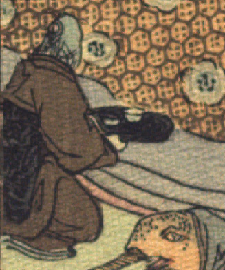

魚の化物。頭部は青く、茶色の着物をまとい、座って、茶碗のようなものを載せた黒い盆を持っている。着物の袖から覗く手は人間のものである。女と思われる。
著作者：J.Dautremer／出典：親書誌：U426_nichibunken_0107：La meduse simple et naïve／日付：2006／資源識別子：U426_nichibunken_0107_0003_0002
Copyright (c)2010- International Research Center for Japanese Studies, Kyoto, Japan. All rights reserved.